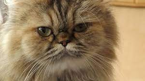
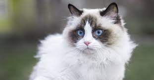

Si nos decidimos a adoptar un felino, debemos tener
en cuenta que es una gran responsabilidad, ya que no
solo hay que alimentarlo, sino también tener su
vacunación actualizada y ofrecerle una buena calidad
de vida. Una opción muy interesante que deberíamos
valorar es contratar un seguro para mascotas que nos
permita afrontar los gastos imprevistos que puedan
surgir si desarrolla alguna enfermedad o sufre algún
accidente doméstico.
Existen ciertos mitos que sitúan a los gatos como
seres muy independientes, ariscos y reacios al
cariño humano. Sin embargo, esto no es cierto. De
hecho, un gato que se acostumbra al contacto y amor
de sus dueños puede ser la mascota más dulce y
agradecida. Si tenemos la posibilidad, es
recomendable introducir la mascota en nuestro hogar
desde bebé, porque así crecerá y se adaptará mejor
junto a los miembros de la casa. Lo ideal es
encontrar un sitio de confianza donde adquirir todos
sus productos de higiene, alimentación, sus juguetes
y todo lo que necesitemos para su bienestar. En
es.collected.reviews podemos encontrar opiniones
sobre diferentes tiendas online para animales. Vamos
a hacer un repaso sobre las razas de gatos
consideradas como las más cariñosas.
Persa
Es una de las razas más conocidas en el mundo, muy
popular y buscada. El motivo principal es su pelaje
largo, que asemeja la suavidad de un peluche, y la
particularidad de los rasgos de su rostro. Es una
raza bastante dulce y por lo general son muy
tranquilos. Su temperamento es calmado y afectuoso,
además de ser unos de los gatos más dormilones.Sin
embargo, hay que tener en cuenta que, aunque suelen
dejarse acariciar y buscar el contacto de sus
dueños, se acostumbran a éstos y suelen rechazar los
extraños, por lo que puede que no se lleven bien con
las visitas de personas ajenas.

Siamés
Son gatos poco comunes y más difíciles de encontrar.
Es una de las razas de felinos más sociables. Aparte
de su belleza y sus característicos ojos color azul
pálido, precisamente lo que los hace tan populares
es esa forma de ser tan social. Son muy juguetones
con sus dueños y especialmente pacientes con los
niños.
Ragdoll
Son gatos de pelaje blanco y suave y ojos azules,
con partes de sus orejas y de su lomo más oscuras.
Se les conoce como Ragdoll (muñeca de trapo) porque
se dejan tomar en brazos y acariciar, dejando su
cuerpo blando y relajado. Son tranquilos y mansos,
además de unos compañeros muy cariñosos. Suelen
perseguir a sus dueños de un lado a otro, ya que no
quieren estar sólos y se adaptan a otro tipo de
mascotas, por lo que son estupendos para tener en
una familia.

Maine Coon
Son muy famosos en Estados Unidos, país de origen.
Son de gran tamaño, considerados como el gato
doméstico más grande del mundo, y tienen las orejas
puntiagudas. Son muy sociables y afectuosos, sobre
todo con los niños. Algo especial de esta raza es
que les encanta el agua y bañarse, lo que puede ser
una forma más de vincularse con sus dueños,
compartiendo esos momentos de baño.